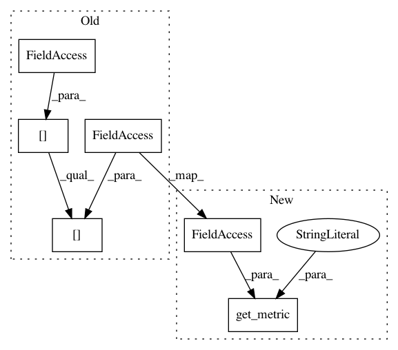

933fd511d4ea8ddbfbcd83c07ea62ebd72763285,torchbearer/callbacks/early_stopping.py,EarlyStopping,step,#EarlyStopping#Any#,71
Before Change
self.best = state_dict["best"]
def step(self, state):
current = state[torchbearer.METRICS][self.monitor]
if self.monitor_op(current - self.min_delta, self.best):
self.best = current
self.wait = 0
else:
After Change
self.best = state_dict["best"]
def step(self, state):
current = get_metric("Early Stopping", state, self.monitor)
if self.monitor_op(current - self.min_delta, self.best):
self.best = current
self.wait = 0
else:
In pattern: SUPERPATTERN
Frequency: 3
Non-data size: 6
Instances
Project Name: ecs-vlc/torchbearer
Commit Name: 933fd511d4ea8ddbfbcd83c07ea62ebd72763285
Time: 2020-01-31
Author: mp2u16@soton.ac.uk
File Name: torchbearer/callbacks/early_stopping.py
Class Name: EarlyStopping
Method Name: step
Project Name: ecs-vlc/torchbearer
Commit Name: 933fd511d4ea8ddbfbcd83c07ea62ebd72763285
Time: 2020-01-31
Author: mp2u16@soton.ac.uk
File Name: torchbearer/callbacks/terminate_on_nan.py
Class Name: TerminateOnNaN
Method Name: _check
Project Name: ecs-vlc/torchbearer
Commit Name: 933fd511d4ea8ddbfbcd83c07ea62ebd72763285
Time: 2020-01-31
Author: mp2u16@soton.ac.uk
File Name: torchbearer/callbacks/checkpointers.py
Class Name: Best
Method Name: on_checkpoint